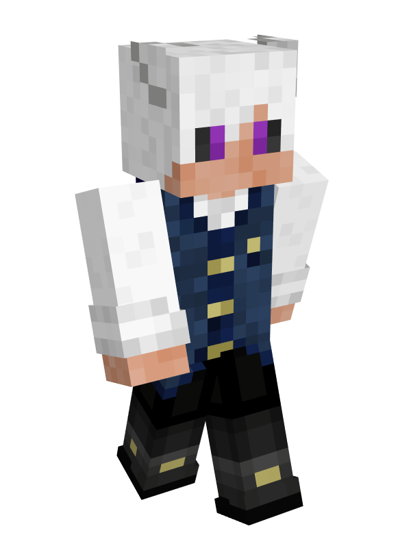
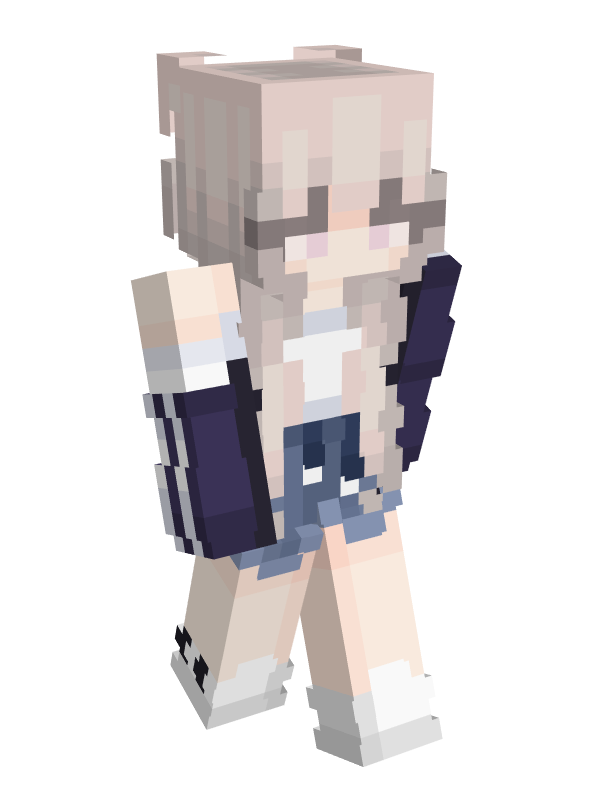
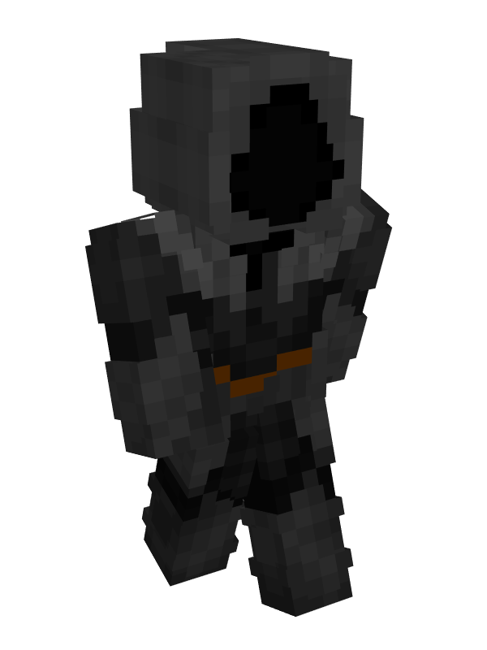
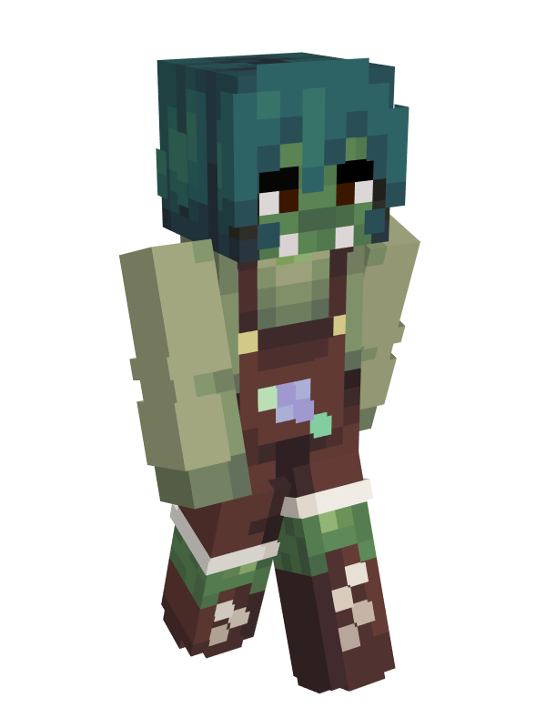
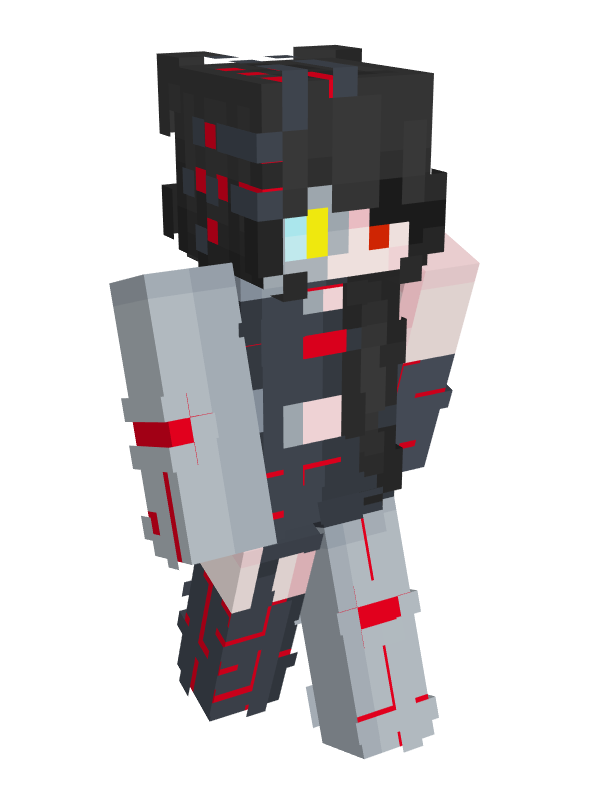
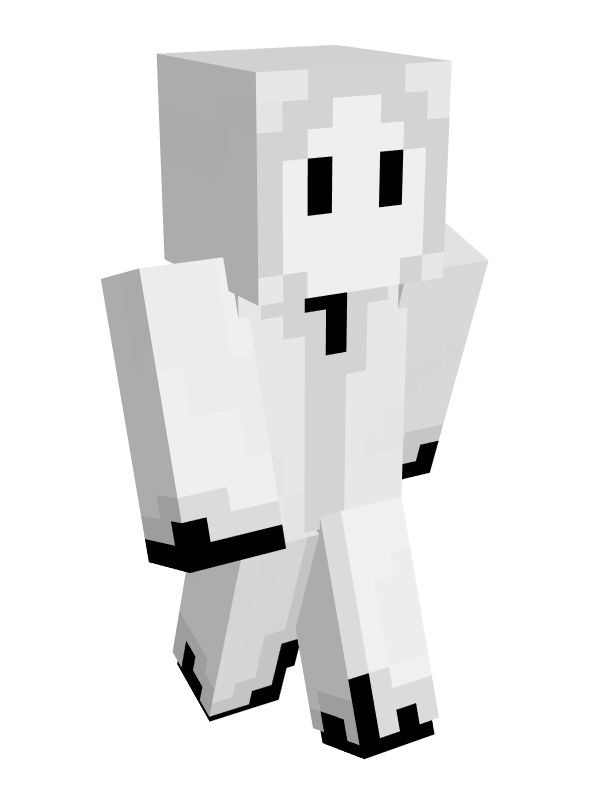
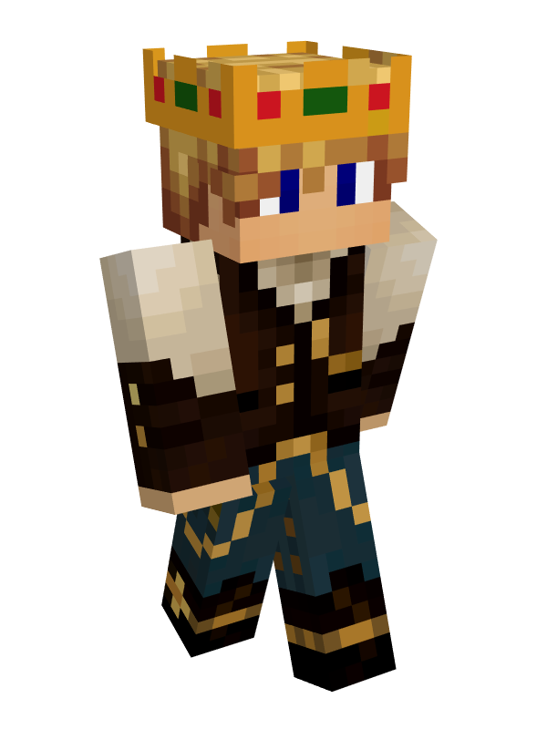
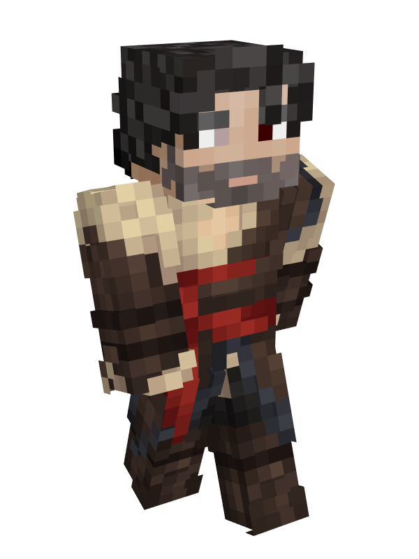

icon: LiList
Allegiance List
Back
Armon 
Ashley
Davelore
Jaeger
Jennifer 
Melphizard 
Ponk 
Stephan
Xena
Betty Blood
Ashley Spirit 
Fashley
Gary
Muse
Pele
Smith 
Gutankrt
Theockan
Carl
Sola
Testing
Crein
Halthawn
Seastik
Zood
Eleon
Erine
Falandar
Father Stefan
Marcus
Nydid
Sockworthy
Helen
Nate Asher
Imbella
Leatan
Gerilo
Jakel
Cunien
Sanderk
Seaserpa
Drake 
Drayk 
Byron
Liam
Old Man Harold


 Amidonian Inquisition
Amidonian Inquisition

 Guards
Guards


 Castle Staff
Castle Staff


 Amidonian Inquisition Guards Castle Staff
Amidonian Inquisition Guards Castle Staff